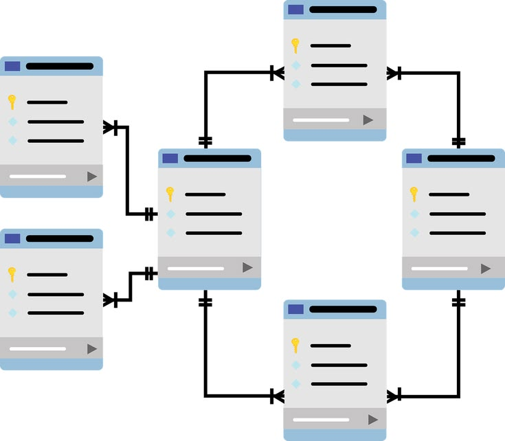

2. Persistencia y Acceso a Datos
Definición
La persistencia de datos en aplicaciones móviles se refiere a la capacidad del software para almacenar información de forma duradera en el dispositivo o en servidores externos, permitiendo que los datos sobrevivan al cierre de la aplicación, reinicios del sistema operativo o fallos de energía.
Características Principales
- Restricción de recursos: Memoria RAM y almacenamiento flash limitados en dispositivos móviles.
- Conectividad intermitente: Necesidad de sincronización local cuando no hay red disponible (offline-first).
- Seguridad y aislamiento: Cada aplicación opera en un espacio de almacenamiento privado (Sandbox).
Formas de Persistencia en Dispositivos Móviles
- Archivos Locales: Almacenamiento directo en el sistema de archivos del dispositivo (formatos JSON, XML, TXT o binarios). Ideal para configuraciones o caché ligera.
- Bases de Datos Locales (SQLite / Room / CoreData): Motores relacionales embebidos en el dispositivo que permiten consultas estructuradas complejas con alta eficiencia.
- Bases de Datos Remotas mediante Servicios Web: Repositorios en la nube (MySQL, PostgreSQL, Firebase Firestore) accedidos a través de APIs RESTful o GraphQL mediante protocolos HTTP/HTTPS.
Tipos de Datos Almacenables
Dependiendo del mecanismo, se almacenan credenciales de usuario y tokens (archivos seguros/SharedPreferences), registros relacionales estructurados como transacciones o listas de contactos (SQLite), y multimedia pesada o catálogos sincronizados (archivos y servicios web).
Mecanismos de Control de Acceso a Medios Persistentes
- Biblioteca de Clases: APIs nativas provistas por el SDK (ej.
NSFileManageren iOS ojava.io.Fileen Android). - Clases de SQLite: Controladores y sentencias SQL directas para gestionar tablas, cursores y transacciones.
- Mapeo Relacional de Objetos (ORM): Herramientas como Room (Android) o Realm que transforman tablas relacionales en objetos de programación orientada a objetos (POCOs/Entities), facilitando el desarrollo.
Proceso de Autenticación y Consumo de Servicios Web
Comprende la emisión de credenciales (usuario/contraseña), obtención de un token de acceso seguro (JWT - JSON Web Token), almacenamiento seguro de dicho token en el dispositivo, y su inclusión en las cabeceras HTTP (Authorization: Bearer ) para consumir endpoints protegidos.

Video Explicativo Recomendado
Profundiza en los conceptos clave de este tema a través de nuestra selección audiovisual en YouTube.
▶ Ver video explicativo en YouTube